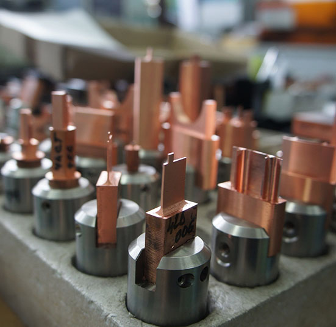

Короткий ответ: титан в ЭЭО — не «просто ещё один металл». Он плавится при 1668 °С, плохо отводит тепло, а в водном диэлектрике активно поглощает водород. Поэтому среда, материал электрода и режим здесь важнее, чем при обработке стали.
Титан — материал, ради которого ЭЭО-участок и держат: прочный, биосовместимый, но при лезвийной обработке капризный и «горячий». Электроэрозионная обработка снимает металл без сил резания — и потому её часто рассматривают для титановых деталей. Но у связки «титан + ЭЭО» есть свои правила, нарушение которых стоит брака.
Почему титан в ЭЭО особый
Титан плавится при 1668 °С и плохо отводит тепло: энергия разряда концентрируется в малом объёме, зона термического влияния получается малой, но локально горячей. На грубых режимах это даёт характерные дефекты: recast-слой (переплавленный и застывший металл), микротрещины, пригар.
На чистовых режимах малой энергии слой сжимается до единиц микрон — именно поэтому для ответственных поверхностей режимы подбираются под результат по шероховатости, а не «что быстрее».

Среда: керосин против воды
Классическая среда прошивки — углеводородные диэлектрики (керосин, синтетические масла). У них высокая электрическая прочность и хорошая промывка, но есть недостаток, критичный для ответственных деталей: при разрядах углеводороды разлагаются, и на поверхности формируется углеродная плёнка — продукты пиролиза закрепляются в микронеровностях рельефа. Убрать её из глубоких лунок последующей очисткой сложно.
Альтернатива — деионизированная или дистиллированная вода. Данные исследований на титане ВТ1-00 показывают:
- шероховатость поверхности в воде получается ниже, чем в керосине, — примерно на 10%;
- отсутствует углеродная плёнка — поверхность остаётся «чисто металлической»;
- среда пожаробезопасна и не требует организации вентилируемой зоны под пары углеводородов.
Плата за это: коррозионная активность воды к оснастке и более низкая скорость съёма на черновых режимах. Вывод простой и проверенный практикой: черновые переходы — на масле, чистовые ответственные поверхности — на воде. Если деталь допускает изменение маршрута, всю обработку полезно вести в воде.
Электрод: не всякий материал одинаково безопасен
Износ электрода — половина качества поверхности. Но есть и второй фактор, о котором в общей литературе говорят редко, а в медицинском производстве он решающий: перенос материала электрода на обрабатываемую поверхность.
При прошивке латунным или медным электродом на поверхности образуются пятна переноса меди и цинка. Для машиностроительной детали это косметика, для медицинского изделия из титана — потенциальная проблема биосовместимости: даже следовые количества посторонних металлов на поверхности, контактирующей с тканями, нежелательны. Исследования ЭЭО-поверхностей имплантов показывают: материал электрода остаётся на поверхности даже после ультразвуковой очистки, и его присутствие коррелирует со снижением жизнеспособности клеток.
Отсюда практическое правило для медицинских деталей из титана: электрод — из титана той же или более чистой марки. Ресурс у него ниже, чем у латуни (по данным экспериментов — примерно втрое), и это приходится закладывать в маршрут: контроль износа микрометром каждые несколько заготовок, переналадка по достижении предельного износа.
Износ и производительность на современном станке
Классические справочные данные по ЭЭО титана получены на станках предыдущих поколений, и напрямую переносить их на современное оборудование нельзя. Современные генераторы с адаптивным управлением межэлектродным зазором и стратегии типа «выпрыгивания» электрода (подъём и прокачка зазора без гидравлической промывки) дают:
- износ электрода на черновых режимах менее 1% (по данным производителей — для медных и графитовых электродов; для титановых публичных данных мало, ресурс проверяется пробой);
- стабильную шероховатость по глубине полости — там, где на старых станках рост шлама в глубине «заваливал» качество;
- типичные скорости съёма на прошивке — от единиц до десятков мм³/мин в зависимости от режима и площади электрода.
Для глубоких малых полостей (шестигранники, шлицы, сложные профили) реалистичный цикл на современном станке — единицы минут, а не десятки, как по справочникам 80-х.
Практические рекомендации
- Ответственная поверхность — диэлектрик на водной основе; черновая операция — можно в масле.
- Для медицинских изделий — электрод из титана, контроль износа обязательный элемент маршрута.
- Режимы подбираются под целевую шероховатость и глубину снимаемого дефектного слоя, а не наоборот: сначала «что должно получиться», потом энергия импульса.
- После ЭЭО — ультразвуковая очистка (22–25 кГц, спиртовой раствор) и визуальный контроль 100% остатков шлама и плёнки в лунках — основание для перечистки.
- Цифры из справочников — отправная точка для опытной партии, а не регламент: время и износ на конкретном станке проверяются пробой 3–5 заготовок.
Нужна ЭЭО титановых деталей?
Или позвоните: +7 (939) 440-40-01, sale@tochtex.ru
Частые вопросы
Какой диэлектрик использовать при ЭЭО титана?
Черновые переходы допустимо вести в углеводородной среде. Чистовые ответственные поверхности — в деионизированной или дистиллированной воде: шероховатость ниже примерно на 10%, нет углеродной плёнки от пиролиза.
Какой электрод нужен для медицинских деталей из титана?
Для биоконтактирующих поверхностей — только титановый электрод. Латунный и медный дают перенос меди и цинка, который сохраняется даже после ультразвуковой очистки.
Как подбирать режимы?
Сначала «что должно получиться» — потом энергия импульса. Справочники 80-х — отправная точка, а не регламент.
Что делать после ЭЭО?
Ультразвуковая очистка (22–25 кГц, спиртовой раствор) и 100% визуальный контроль остатков шлама и плёнки.
Другие услуги
- Электроэрозионная обработка: проволочная вырезка и прошивка
- Токарные, фрезерные, шлифовальные работы
- Изготовление пресс-форм и штампов
Читайте также
- ЭЭО в медицинских изделиях: где правильный инструмент, а где — нет
- Поверхность дентального имплантата: SLA, лазер и ЭЭО — честное сравнение
- Электроэрозионная обработка металла: полный обзор
- 5-осевая ЭЭО: паз от 0,25 мм
Ищете исполнителя для ЭЭО титановых деталей?
Прошивка профилей, доработка, мелкосерийные задачи. Станки Sodick, обработка в воде по требованиям к медицинским изделиям.